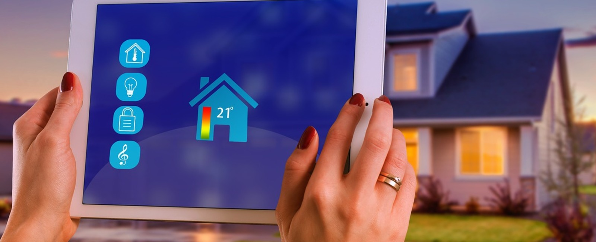
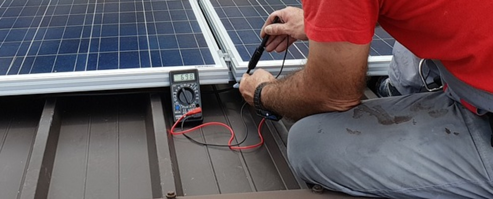

Proyectos Electrónicos

Este módulo se centra en el desarrollo y la implementación de
proyectos prácticos en el campo de la electrónica, proporcionando a
los estudiantes la oportunidad de aplicar los conocimientos teóricos
en proyectos reales.
Armado y Reparación de Circuitos Electrónicos
En este curso, los estudiantes aprenderán a armar y reparar circuitos
electrónicos, adquiriendo habilidades prácticas en la identificación y
solución de problemas en sistemas electrónicos.
Ensamblaje y Mantención de Sistemas y Equipos Digitales
Este módulo se enfoca en el ensamblaje y mantenimiento de sistemas y
equipos digitales, abordando aspectos como la instalación,
configuración y resolución de problemas en sistemas digitales.
Sistemas de Control Domótico

Los estudiantes explorarán los sistemas de control domótico, incluidos
los dispositivos y tecnologías utilizados en la automatización del
hogar, así como la programación y el diseño de sistemas de control
inteligentes.
Emprendimiento y Empleabilidad Electrónica

Este curso se centra en el desarrollo de habilidades empresariales y
profesionales en el campo de la electrónica, preparando a los
estudiantes para emprender sus propios proyectos o integrarse en el
mercado laboral.
Mantención y Operación de Equipos de Control Electrónico de Potencia
Los estudiantes aprenderán a mantener y operar equipos de control
electrónico de potencia, adquiriendo conocimientos en el diseño,
instalación y mantenimiento de sistemas de control de potencia.
Detención de Fallas Industriales
En este módulo, los estudiantes aprenderán técnicas de detección y
diagnóstico de fallas en sistemas industriales, preparándolos para
solucionar problemas y mantener la eficiencia en entornos
industriales.
Operación y Programación de Equipos de Control Eléctrico Industrial
Los estudiantes adquirirán habilidades en la operación y programación
de equipos de control eléctrico industrial, permitiéndoles optimizar
procesos y mantener sistemas industriales eficientes y seguros.
Montaje de Equipos Industriales
Este módulo se centra en el montaje y la instalación de equipos
industriales, proporcionando a los estudiantes habilidades prácticas
para ensamblar y mantener equipos utilizados en entornos industriales.
Automatización Industrial
Los estudiantes explorarán los conceptos y técnicas de automatización
industrial, incluyendo la programación y operación de sistemas
automatizados utilizados en la producción y fabricación industrial.